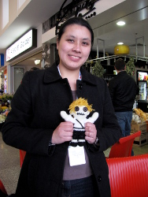
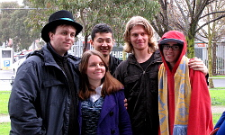
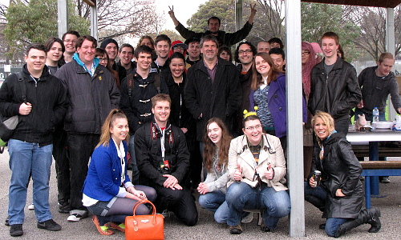
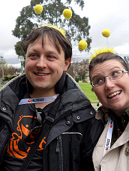

In spite of rain, more than 30 Australian Double Fine fans and Ron Gilbert braved the damp for a typical Aussie mid-winter BBQ and had a great time!
Read on for more details, or check the forum thread for additional photos and general camaraderie mateship.
Tim and the team recorded a special message for us.
Why
It's not often that an international pop culture/gaming event happens in Australia that brings people together the way that PAX does. This was a great time for fans and communities to come together to meet new friends and celebrate the things they love.
With Double Fine not able to attend, setting a time and place to gather was the best opportunity to bring local DF fans and PAX attendees from afar together.
PAX Australia sold out very quickly, and there have been many people interested in a meetup who weren't able to get passes. Having something across the road from the showgrounds made it accessible to those that missed out whilst still keeping it easy for PAX attendees to get to without missing out on PAX content due to travel time.

Where
Situated on Langs Road in Ascot Vale, Victory Park has play equipment, BBQ facilities and open space for pirates, psychic agents, metal heads and spelunkers alike.
A map showing the PAX Australia venue, our BBQ meeting point and the bad weather fallback.

Bad weather forced us to take shelter at a cafe in the Showgrounds Village shopping complex, but we were eventually able to make our way out across to the park, and the shelter there kept us dry.
Who
Those who were able to make it got to hang out with:
Ron Gilbert - PAX Australia keynote speaker, former Double Fine team member and creator of Maniac Mansion, Monkey Island, DeathSpank and The Cave (amongst others)!
Cheese - that fellow who coordinates the Double Fine Game Club, resplendent in his antennae!
Less wildlife than images on this page seem to suggest!
And a whole bunch of super awesome Aussie DF fans!

Some of the wonderful Double Fine fans who joined us and a large pole!
Thanks!

Super huge thanks to the following people, whithout whom the Double Fine Down Under BBQ wouldn't have been as awesome:
Everybody at Double Fine, for being supportive (especially Greg and Chris) and donating some Humble Double Fine Bundle keys to give away.
Ron Gilbert, for giving up his afternoon to spend with us.
Nads and Brad, for cooking snags (sausages) and meatballs (meatballs) in the drizzle (rain) like champs (top blokes good people).
udoncat, for helping out with some planning.
JackSlack, for the lovely photo of Cheese and Mim to the right.
Every single person who showed up, for being super awesome!